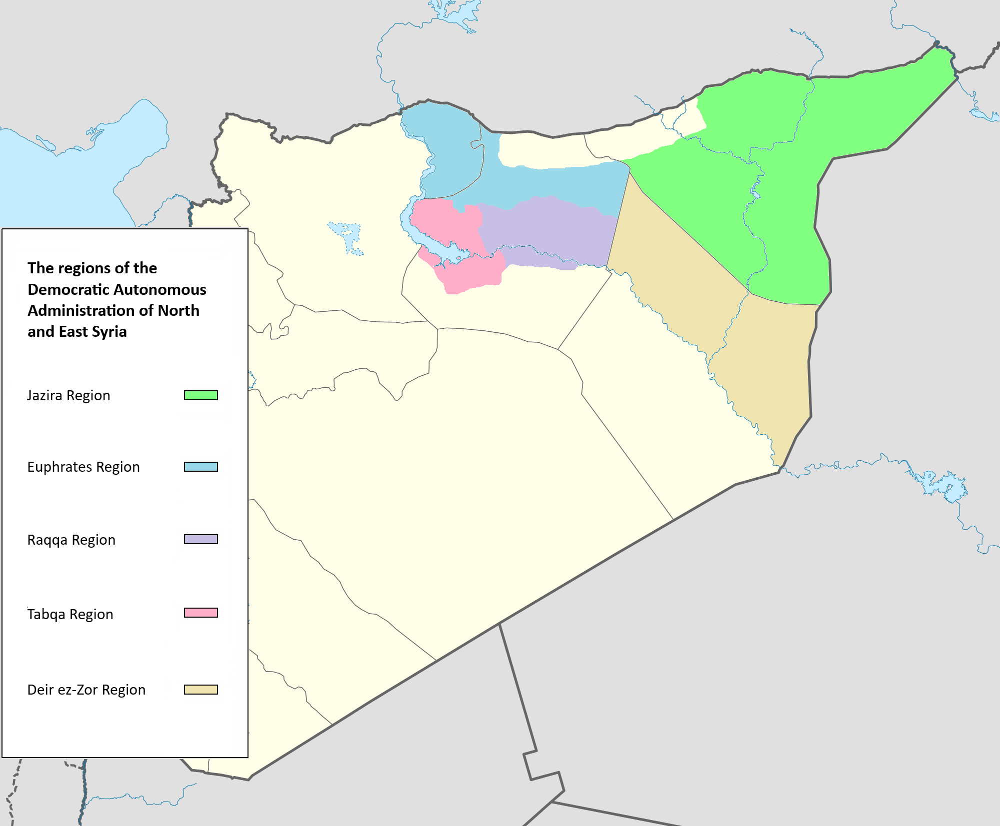
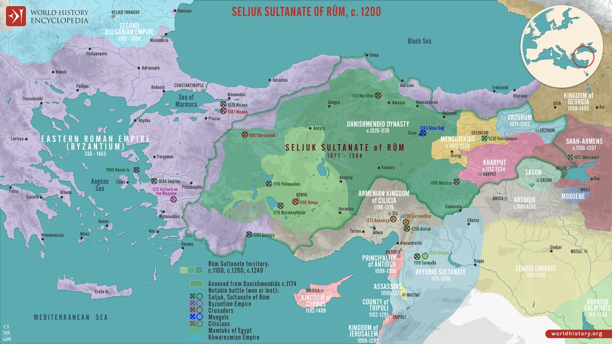
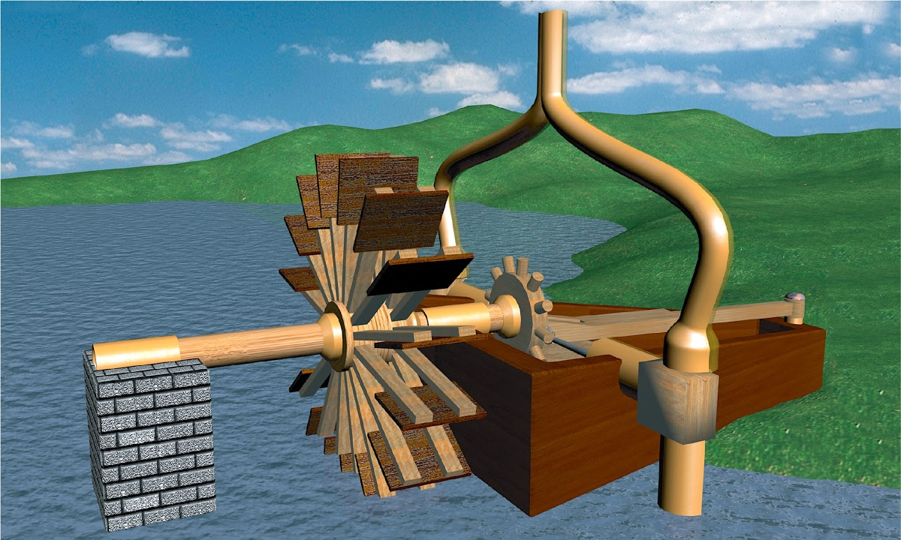
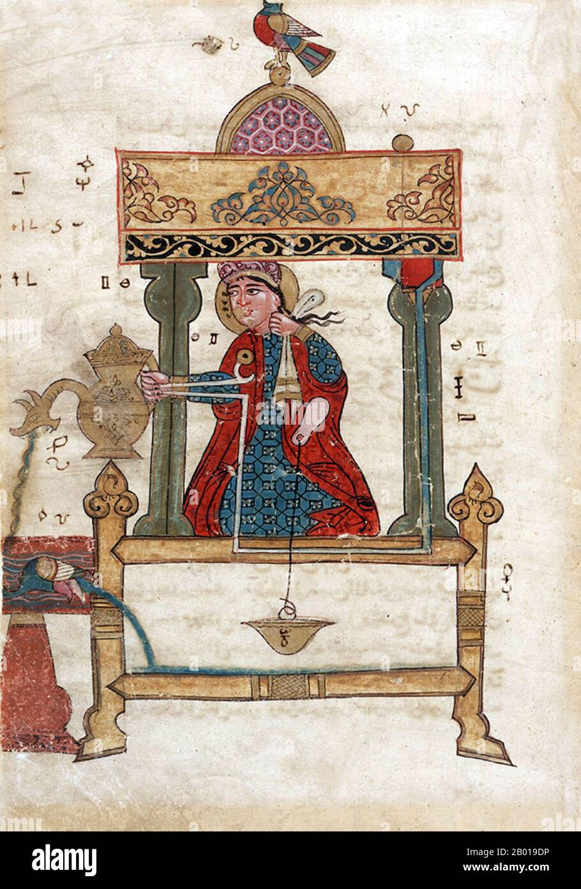
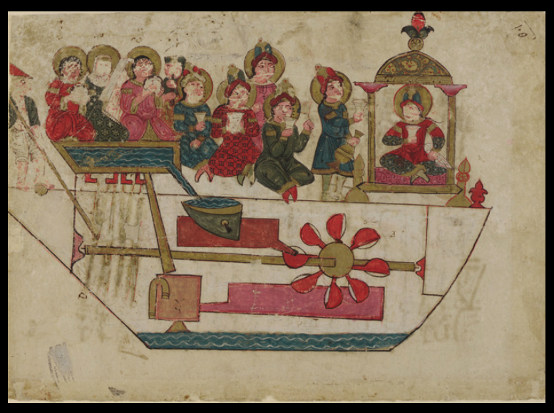
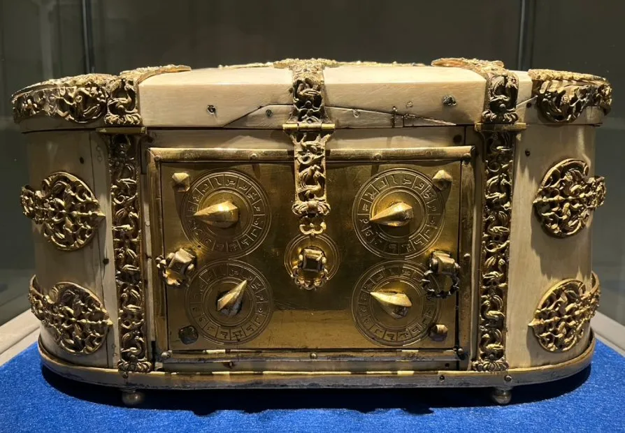
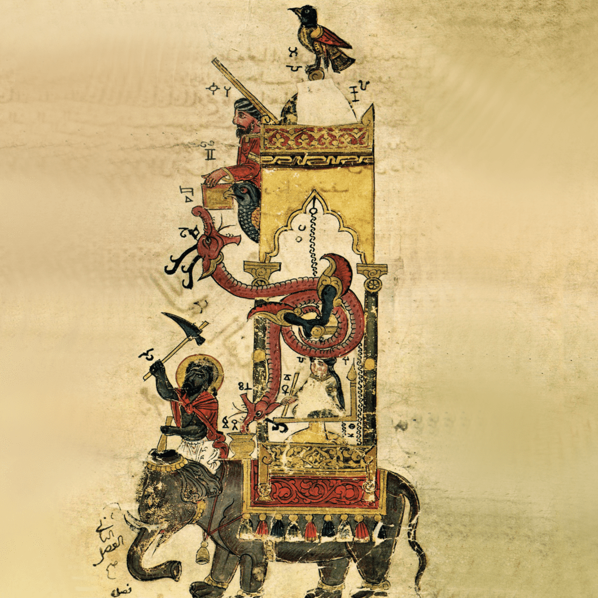

Badiʿ al-Zamān Abū al-ʿIzz Ismāʿīl ibn al-Razzāz al-Jazarī (1136–1206), the 12th-century Muslim polymath, mechanical engineer, and artist whose Book of Knowledge of Ingenious Mechanical Devices laid the foundations of modern robotics, automation, and mechanical engineering.
Identity & Origins

Al-Jazari was born in 1136 CE in the Jazira region of Upper Mesopotamia (modern-day Cizre/Diyarbakır area, Turkey/Syria border). Little is known of his early life or family beyond his own brief notes in his famous book. He served as chief mechanical engineer at the Artuqid court in Diyarbakır for 25 years, where he designed and built extraordinary devices for the palace and city.
Historical Context: The World During Al-Jazari's Lifetime
The 12th century saw dynamic shifts in the later Islamic Golden Age: crusades, empire changes, and intellectual vibrancy. Globally, Europe had the High Middle Ages (Gothic cathedrals, universities). In Asia, Song China advanced gunpowder/printing, and Khmer built Angkor Wat. Al-Jazari lived in Upper Mesopotamia under the Artuqid dynasty (vassals of Zengids/Ayyubids) in a fragmented but culturally rich Muslim world.

Before His Birth (Pre-1136): After the "Shia Century" (where the Buyids and Fatimids were dominant), Sunni revival came under Seljuk Turks (defeated Buyids in 1055, built the Great Seljuk Empire). The First Crusade (1096–1099) created Christian states in the Levant.
During His Lifetime (1136–1206): Al-Jazari served the Artuqids amid fragmentation. Major powers at the time: Abbasid Caliphate (Baghdad), Ayyubid Sultanate (Egypt/Syria under Salahuddin after 1171), Almohad Caliphate (North Africa/Spain), Sultanate of Rum (Anatolia), Ghurids (India/Afghanistan), rising Khwarazmians (Central Asia/Persia). Great Seljuk Empire collapsed in 1194 (when Toghrul III was defeated by Khwarazmian Ala al-Din Tekish). Durind the 1190s, Caliph al-Nasir li-Din Allah partially revived Abbasid influence in Iraq and western Iran — this was the Sunni resurgence in Baghdad during Al-Jazari’s later years. Key points: Saladin recapturing Jerusalem (1187) and the Abbasid revival under al-Nasir li-Din Allah.
Al-Andalus (Islamic Spain): Under Almohad rule (mid-12th century onward), cities like Córdoba, Seville, and Granada remained learning centers despite Reconquista pressure. Great Mosque of Córdoba endured as a symbol; the Almohads built iconic minarets (e.g., Giralda in Seville). Scholars like Ibn Rushd worked here before moving to Marrakesh.
After His Death (Post-1206): Seljuk remnants faded; Mongols under Genghis Khan (from 1206) conquered, sacking Baghdad (1258) under last caliph al-Musta'sim—ending classical Golden Age.
Contemporaries & Scholars: Ibn Rushd (Averroes) in philosophy/medicine, Al-Idrisi in cartography, Ibn Arabi in Sufism, Hibat Allah al-Baghdaadi in optics. Leaders like Saladin unified against Crusaders.
Other Achievements of the Time: Refined astrolabes, creating surgical tools, cartography, optics, and architecture (Almohad minarets, mosques)—fostering knowledge exchange and setting the stage for Al-Jazari’s work.
Scientific Contributions & The Book
Al-Jazari’s legacy rests on Kitab fi ma'rifat al-hiyal al-handasiya (The Book of Knowledge of Ingenious Mechanical Devices) (1206 CE), his only surviving work. It details over 50 original machines (some sources count up to 100 variations) across six categories, with precise instructions, illustrations, and explanations. He improved on ancient Greek, Persian, and Indian designs while introducing groundbreaking mechanisms like the camshaft, crankshaft, segmental gears, and programmable control systems.
The book is divided into six categories:
I. Clocks (10 devices) – Water and candle-powered timekeepers with automata.
II. Vessels & Figures for Drinking Sessions (10 devices) – Trick automata for serving wine/water entertainingly.
III. Pitchers, Basins & Phlebotomy Devices (10 devices) – Automated washing and bloodletting tools.
IV. Fountains & Perpetual Flutes (10 devices) – Changing fountains and continuous musical automata.
V. Water-Raising Machines (5 devices) – Advanced pumps and wheels for irrigation.
VI. Miscellaneous (5 devices) – Locks, doors, and measuring tools.
Key Individual Inventions:
Elephant Clock (Category I) — Monumental water clock with seasonal hour adjustment, zodiac display, humanoid striking cymbals every half-hour, chirping bird, and moving dragons—blending art, astronomy, and automation.
Castle Clock (Category I) — Over 3.5 m tall astronomical water clock showing time, zodiac, musicians playing at set hours, doors opening, and automata figures signaling events.
Double-Action Reciprocating Suction Pump (Category V) — Twin-cylinder pump with valves for continuous water lift; featured the first known crank-connecting rod mechanism converting rotary to linear motion efficiently.

Hand-Washing Servant Automaton (Category III) — Humanoid robot that pours water, dispenses soap, and offers a towel automatically—often called the world's first true robot for hygiene.

Programmable Drum Machine (Category IV) — Camshaft with interchangeable pegs controlling rhythms on drums—earliest known programmable automaton, allowing different melodies to be "programmed."
Musical Boat Automaton (Category II) — Floating boat with female figures playing instruments (flutes, drums) via hydraulic power and cams—entertained during drinking parties.

Peacock Fountain / Pitcher (Category IV / II) — Automated peacock-shaped vessel that refills itself and dispenses water/wine with moving tail and head—trick device for banquets.
Combination Lock Chest (Sundūq) (Category VI) — Secure chest with four rotating dials creating billions of combinations—early advanced mechanical lock for valuables.

Perpetual Flute with Tipping Buckets (Category IV) — Self-playing flute using tipping buckets and siphons for continuous melody without refilling—demonstrated precise timing and flow control.
These inventions advanced hydraulics, automation, feedback control, and programmability. Al-Jazari emphasized beauty, reliability, and replicability—his detailed drawings enabled future builders. His camshafts, crankshafts, and automata prefigured modern robotics, CNC machines, and industrial automation by centuries.
Timeline of Achievements
1136 CE
Birth in the Jazira region, Upper Mesopotamia.
1174–1181 CE
Begins 25-year service as chief engineer to the Artuqid rulers in Diyarbakır.
1198–1206 CE
Designs and builds dozens of machines; compiles his lifetime work into The Book of Knowledge of Ingenious Mechanical Devices.
January 1206 CE
Completes and presents the illustrated book to King Nasir al-Din; dies shortly afterward in Diyarbakır.
Masterpieces: The Elephant Clock & Birth of Robotics
Al-Jazari’s most celebrated creation is the Elephant Clock — a monumental water clock blending Indian, African, Chinese, and Arab artistic elements. A hidden tank drives a floating bowl that triggers a humanoid figure to strike a cymbal every half-hour, a mechanical bird to chirp, and dragons to move. It also displays the zodiac and temporal hours that adjust for seasons.
Another groundbreaking invention: the programmable drum machine — the world’s first known programmable robot. Pegs on a revolving camshaft controlled drum rhythms, allowing different melodies to be “programmed.” His humanoid servant automaton (hand-washing robot) is often called the first true robot in history.
Through these devices Al-Jazari demonstrated programmable control, feedback mechanisms, and human-like automata centuries before the European Renaissance.

Legacy & Influence
Leonardo da Vinci & European Engineers
His automata and mechanical principles reached Europe through translations and trade, influencing Renaissance inventors including Leonardo da Vinci’s robot designs.
Modern Robotics & Engineering
Recognized today as the Father of Robotics. His camshaft, crank mechanisms, and programmable automata directly prefigure modern automation, CNC machines, and industrial robots.